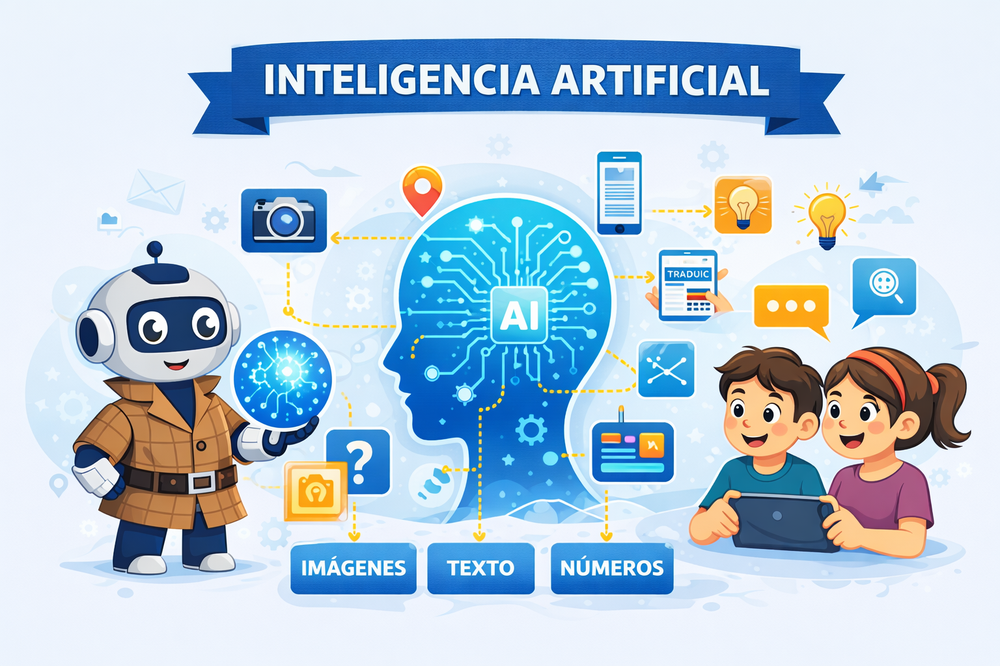
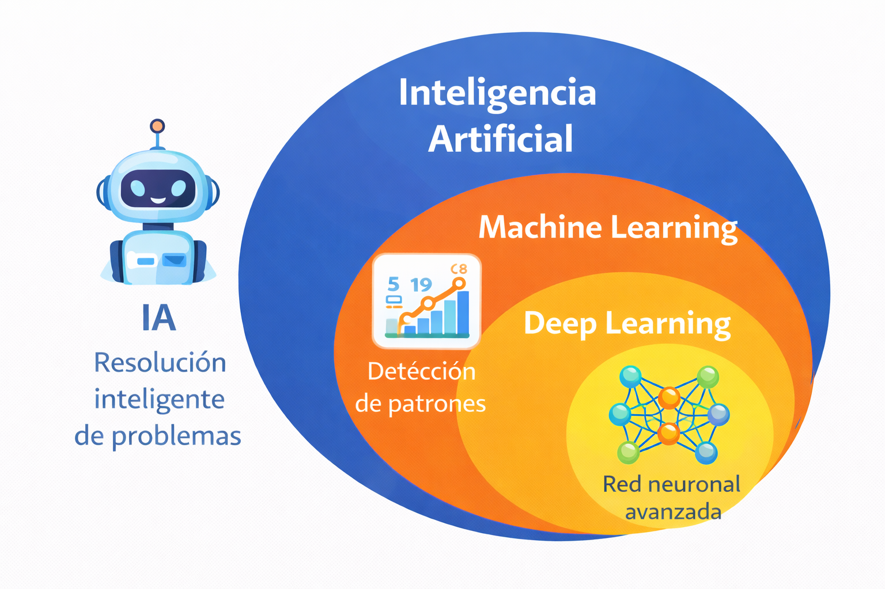

Para poder realizar con éxito el reto final debemos aprender algunas cosas sobre la inteligencia artificial.
La inteligencia artificial es una rama de la informática que se encarga del estudio y desarrollo de sistemas que puedan realizar tareas que requieren inteligencia humana, como el reconocimiento de patrones, el aprendizaje automático y la toma de decisiones.
La inteligencia artificial se basa en la creación de modelos matemáticos y computacionales de la mente humana, con el objetivo de replicar dichos procesos en máquinas. Estos modelos se utilizan para resolver problemas complejos mediante el cálculo de posibles soluciones y la selección de la mejor opción.
Vamos a ver algunos conceptos nuevos pero, no te preocupes, en la actividad anterior ya has trabajado con muchos de ellos, pero eso sí, presta mucha atención porque todo esto será fundamental para conseguir el reto.

El machine learning o aprendizaje automático es una parte de la inteligencia artificial en la que la máquina aprende a partir de ejemplos y datos. En lugar de recibir todas las instrucciones programadas, analiza patrones y utiliza esa información para clasificar, predecir o recomendar resultados. Por ejemplo, una plataforma aprende qué vídeos te gustan observando tus elecciones anteriores.
El deep learning o aprendizaje profundo es una forma más avanzada de machine learning que utiliza redes neuronales artificiales inspiradas en el cerebro humano. Permite analizar grandes cantidades de información en varios niveles, por eso se utiliza en tareas complejas como el reconocimiento facial, la conducción autónoma o la generación de imágenes y lenguaje.
La inteligencia artificial es el conjunto; el machine learning aprende con datos; el deep learning aprende en profundidad.